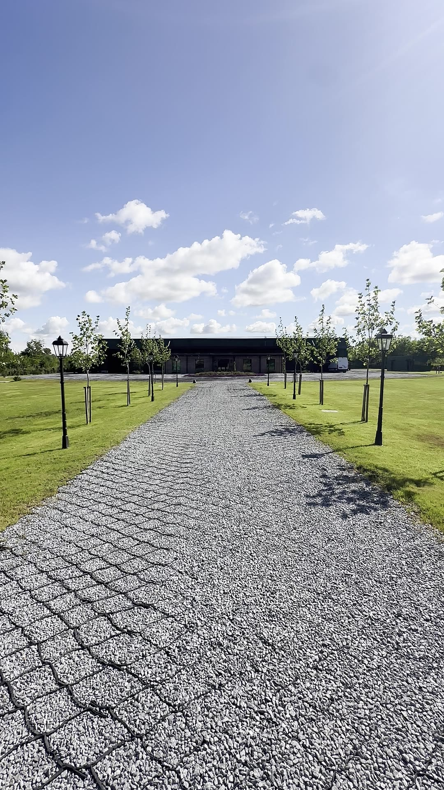

Over 50 years of know-how. A brand-new plant.
De Stefano Insumos comes from a family with more than fifty years in supplies for the meat industry. Today it produces in a plant built from scratch in La Plata, with offices, warehouse and production hall designed to respond quickly to short and long runs.

- La Plataour own plant, Buenos Aires province
- Netsmade in-house, on rolls
- Fibrous casingshirred and RTU-treated in our plant
- Customersin Argentina and abroad
A small team that knows every product
From the knitting machine where the net is made to the shirring of the casing, the same team makes, checks and ships. That is why we can adjust yarn, compression, calibre or stick length to what each customer asks for.
What we do in the plant
- We knit elastic, non-elastic nets and stockinette on rolls.
- We shirr Fibrø® fibrous casing into sticks with RTU treatment, and offer the shirring service for casing from other sources.
- We ship cellophane and mesh bags from our warehouse.